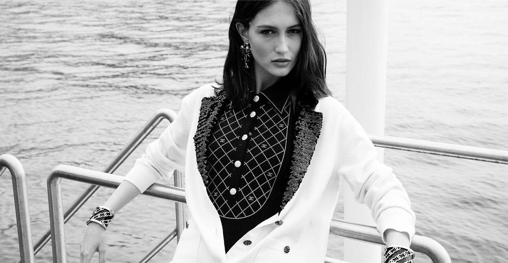

Eighty-five pieces. Four house symbols. A villa above the Mediterranean that asked the cameras to stay outside.
Chanel unveiled the Signes et Symboles high jewelry collection last month at La Pausa, the house Gabrielle Chanel built above Roquebrune-Cap-Martin in 1929. The numbers are large. The staging was deliberately quiet. Eleven thousand five hundred stones across the collection. Three years of selection. Another couple thousand for pavéing the work that wraps the principal stones.
The symbols
The lion, the camellia, the sun, the star. The vocabulary Gabrielle returned to across her life, organised here into four chapters of stones. Diamond opens. Ruby, sapphire and emerald follow. Each chapter holds its own colour story and its own anchors.
At the entrance sits the Imprimé Lion. A plastron necklace of stars and stylised camellias arranged across radiant sunrays, the composition topped with a sculptural lion head and a 20.66-carat unheated Sri Lankan sapphire cut in an octagon. Nearby, the Lion Emblématique brooch is a separate idea. Its mane reads as a coif, something between heraldry and ancient Egypt, paved in rubies and yellow diamonds.
The Imprimé Émeraude ring centres a 10.44-carat emerald, framed by a stage of scintillating diamonds with camellias tucked at either shoulder. In the living room, a two-strand necklace carries paired camellia motifs in beryls edged with yellow sapphires; its chain is a new house mechanism, a succession of minute oval cartouches articulated into one supple line.
The studio
Patrice Leguéreau, the late director of Chanel’s high jewelry studio, sketched the first ideas for this collection in painted research notes dated late 2023 and early 2024. The pages were on display at La Pausa, open beside a row of books on Byzantine jewels. His brushwork has the look of textile development. Colour blocks butt up against each other and read as stones long before they were stones.
Upstairs, in Gabrielle’s mirrored bathroom, four Talisman Gabrielle rings sit together. Each holds one of the four signs: star, camellia, sunburst, lion. The backdrops are chrysoprase, carnelian, black onyx, turquoise. The mystical material, set against the symbolic vocabulary, is the closest the collection gets to a private artefact.
Colour carries the collection. The black-and-white shorthand Chanel taught the world gives up its grip this time.
The Splendid EditThe setting
La Pausa was the place to do it, according to Frédéric Grangié, the house’s watch and jewelry president. The villa’s design quotes the same vocabulary the collection rests on. Five rectangular windows above the main path. Cloister arches that recall Aubazine, the orphanage where Gabrielle spent her teenage years. An iris field bordering the gate. The bedspread upstairs. The symbols predate the jewelry.
Photography of the rooms and the pieces was prohibited. Guests had their notepads. The official imagery shows scant detail: the spine of an ancient book here, the grain of a table there. Grangié told WWD that he prefers signal to noise in a period that has too much of the second. The smaller scale matched the villa. The chosen quiet matched the brand.

The Côte d’Azur, Chanel’s long Riviera geography · Courtesy of Chanel
The patrimony
Beside the new pieces, the house brought out more than 130 jewels from previous Chanel collections, plus a handful of bejewelled watches. The newer work carries more colour than recent Chanel high jewelry has shown. The 2024 Couture Sport collection introduced the tubular chain. The 2025 Reach for the Stars opened the sky. Signes et Symboles closes a trilogy of surprises with the widest palette of the three.
Forty-one pieces in the new collection cross the million-dollar mark. A handful sit in the mid seven figures. Most carry an important stone, sapphire or emerald or ruby. The work was done at Place Vendôme over the same three years the gemology team spent harmonising the eleven thousand-plus stones. Grangié calls the result a symphony rather than a cacophony.
The line he keeps returning to is the long one. Chanel is family-owned and independent. The climate is uncertain. The company stays the course. High jewelry, in his reading, deserves slower time. Signes et Symboles is the part of that argument anyone can look at, on the rare days the pieces leave Paris.
The four symbols, the four stones, the long view. Chanel reads its own grammar one more time, and lets the reader keep up.
Signes et Symboles high jewelry collection unveiled by Chanel at La Pausa, May 2026. The collection sits with the house’s Place Vendôme studio in Paris.
Imagery courtesy of Chanel · Chanel Signes et Symboles, 2026